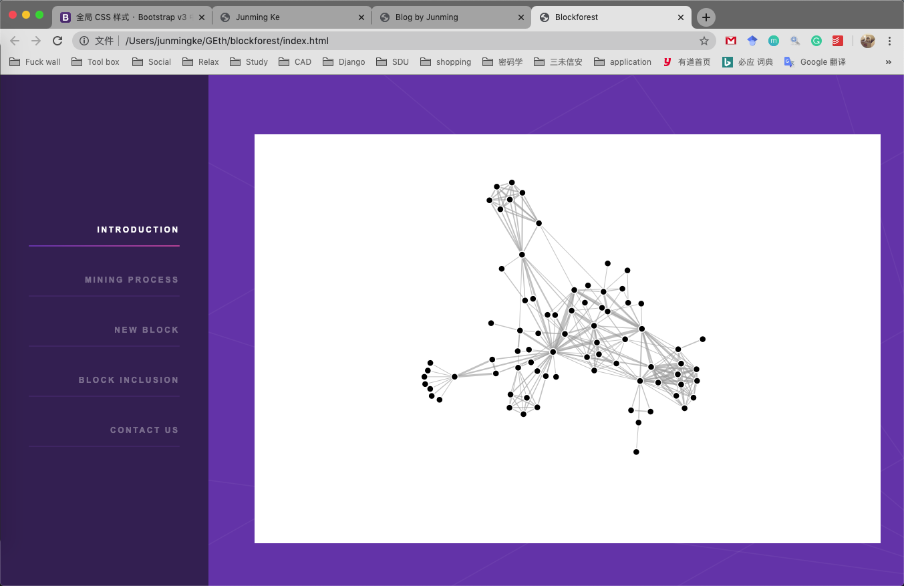

最近开始做blockforest的实现，就重新翻出来博客，打算把开发过程记录下来。
我始终觉得做开发应该写点博客，因为有一些不注意的小坑，可能隔很久才会再碰到，就可以重新再翻一下自己的博客。然后别人跟你一起走上同一个大坑时，或者对你的项目感兴趣时，可以给别人分享你的博客，让别人也少走一些弯路。
本博客描述的源码在 https://github.com/JunmingKe/blockforest。
已经把blockforest的基本框架搭起来了，现在再看d3.js，感觉JavaScript发展的太快了，我实现的磕磕巴巴，连滚带爬。然后d3官网也引用了observable视图展示example，这个视图太不友好了，很多地方完全不懂什么意思。
我打算用力引导来做blockforest的区块视图，但不知道最终看起来的效果怎么样。
关于力引导的实现，有几个需要注意的地方。
Object.create(d): 这是JavaScript的继承方式，但是不继承实例，只继承prototype，也就是说Object.create('giao')生成的是空字符串。
$('#intro')[0].offsetWidth: JQuery抓取的所有id叫intro的元素，如果非常确定id只有一个，那抓取后的数组只有一个，所以我之间访问了[0],然后获取这个div的绝对宽度。
const simulation = d3.forceSimulation(nodes)
.force("link", d3.forceLink(links).id(d => d.id))
.force("charge", d3.forceManyBody())
.force("center", d3.forceCenter(width / 2, height / 2));
这是力引导的精髓，它声明了一个对象simulation，对象里是函数，函数对nodes和links作出力引导的计算，然后后面的simulation.on('tick', () => {})就是不停的调用simulation直到稳定状态。
绑定drag操作：
这个就好理解一些，就是声明一个drag函数，drag调用simulation，simulation接收drag的参数后更新nodes和links。
关于var, let和const：
ES6引入了let和const，关于这三种声明的区别，网上都说的很清楚，我总结起来就是开发不要用var，多用let，而且我真的遇上过用var出问题，但let就好了的bug。然后const是非常严格的变量声明，而且只能是常量，而且值不能改变，但是引用类型可以改变，其实这就是指针操作。
1. 先模拟数据做个简单的数据结构展示demo。
2. 然后模拟多个client的运行情况。
3. 模拟prover和verifier的情况。
4. 想要重构一下自己的主页，这个看情况再说，现在感觉有一点臃肿。
最后说一下，我的博客现在采用纯html写了，之前的markdown转html还是太麻烦了，主要是转了之后还得按照html的规则插入到博客里。个人感觉不如直接手撸html，快捷方便，当然如果大家有更方便的方法，请告诉我，但是暂时还没有开服务器的想法。
博客列表 查看主页